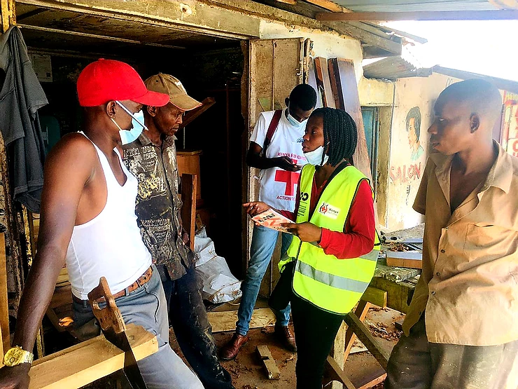

Youth Employment via Elderly/Vulnerable Support

Using a basic income (Sarafu in Kenya) youth can support their elderly and vulnerable by giving them their Sarafu. Then those elderly/vulnerable in turn spend it with other youth run businesses, who could in turn give it to their elderly/vulnerable - who could, in turn, spend it on other youth run businesses and so on - Creating a virtuous circle of markets and employment for youth and support for the elderly.

While new in Kenya, this type of system has been around in Japan since 1995 and is called Fureai kippu . This system was one of the inspirations for bringing the concept of community currency to Kenya over 10 years ago. While this has been piloted in small communities - for the idea to really catch on - elders, chiefs, youth run businesses and chamas all need to understand the virtuous circle created and keep supporting it. This support network is a commons - and it takes identification, communication, training and care. We're very excited about the Kenya Red Cross taking up the challenge to spread
Above is a Kenya Red Cross volunteer working in Kisauni explaining how youth can support their communities and their own families using Sarafu a Community Inclusion Currency/ basic income.